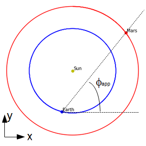

Mouvement rétrograde de Mars#

image from https://mars.nasa.gov/all-about-mars/night-sky/retrograde/
Tous les deux ans, si l’on regarde la position de Mars depuis la Terre par rapport à la voûte céleste, la planète rouge semble faire un bref demi-tour, avant de repartir dans le même sens. Ce mouvement rétrograde est observé depuis l’antiquité.
Le but de ce mini-projet est de construire un modèle reproduisant ce phénomène.
À la maison#
Rappelez les équations du mouvement \(X(t),Y(t)\) pour un mouvement circulaire uniforme de rayon \(R\), de période \(T\) et de phase à l’origine \(\phi\).
Dans quelle direction (quel angle par rapport à la direction de l’axe \(X\)) pointe l’objet à la date \(t=0\) ?
Données#
Le fichier DataMars.csv contient les coordonnées (longitude et latitude) de la position de Mars par rapport au centre de la Terre en fonction de la date entre 2015 et 2017. Notons que la latitude est définie ici par rapport au plan de l’écliptique.
Le centre de la boucle peut s’observer à la date du 25 mai 2016, à la longitude de 240.5°.
NOTE
Pour lire fichier csv, on peut utiliser la fonctionread_csvdu module Pandas, en utilisant l’optioncomment = '#'
(DataMars.csv a été construit à partir des données de http://vo.imcce.fr/webservices/miriade/?forms)
Modèle#
Vous allez utiliser un modèle bidimensionnel du mouvement de la Terre et de Mars autour du Soleil. On considérera le mouvement des deux planètes comme circulaire uniforme et contenu dans le plan de l’écliptique.

Ce modèle vous permettra de calculer la longitude de Mars vue depuis la Terre (i.e. l’angle \(\phi_{app}\) dans le réferentiel géocentrique) en fonction du temps.
NOTE
La fonctionnumpy.arctan(y / x)donnant un résultat entre \(-\frac{\pi}{2}\) et \(\frac{\pi}{2}\), nous vous conseillons de lui préférer la fonctionnumpy.arctan2(y, x)qui donne un résultat entre \(-\pi\) et \(\pi\).
Vous pourrez ensuite comparer le modèle (longitude calculée) aux données astronomiques (longitude mesurée).
INDICE
Le mouvement rétrograde apparent s’observe quand, dans le réferentiel héliocentrique, la Terre “dépasse” Mars. Au “milieu” du mouvement rétrograde la Terre et Mars sont donc dans la même direction par rapport au Soleil (Soleil, Terre et Mars sont alignés). En choisissant judiciseusement la date \(t=0\) et la phase à l’origine pour les deux planètes, on peut faire coïncider le modèle aux données à cet instant.
Grandeurs utiles :#
Rayon de l’orbite de la Terre : 1 UA
Période de révolution de la Terre : 365.256 jours
Rayon de l’orbite de Mars : 1.52371 UA
Période de révolution de Mars : 686.885 jours
Méthodes#
Vous allez utiliser une représentation graphique pour illustrer votre modèle. Pour cela, il faut représenter sur un graphique à la fois les données et le modèle. Vous prendrez un soin particulier pour que le graphique soit lisible et compréhensible.
Voici un exemple de représentation graphique :

Compte-rendu#
Vous rendrez un compte-rendu sous la forme d’un Jupyter Notebook (et d’une partie rédigée à la main si vous le souhaitez). Vous apporterez un soin particulier à la rédaction, à l’explication de la résolution du problème, et à l’explication du script (code commenté). Pour cela, vous ferez différentes sections et vous utiliserez des cellules de texte dans le notebook. Voici un exemple de cellule de texte :
# Section 1
## Sous-section 1
Du texte
- une liste
une formule latex $k=2$
Vous trouverez un formulaire détaillé du formatage des cellules de texte sur le Moodle, ou bien ici.
Vous rendrez votre compte-rendu dans l’activité devoir correspondante de Moodle.